An Invitation to Stay Outside: Outdoor Seating Areas
The outdoor seating around Briger Hall offers a place to study, talk, or take a break in the open air. Like a small park serving the building, it can bring our community contact with nature on an ordinary day. But what makes an outdoor space somewhere people actually want to stay?
Find it
Where to find it: Start at Briger Hall's main glass entrance. Just outside the doors, wooden benches sit in a row between rust-colored steel planters filled with bright green grasses and small magnolia trees. Choose any of these benches. The path from the doors to the benches is flat concrete paving.
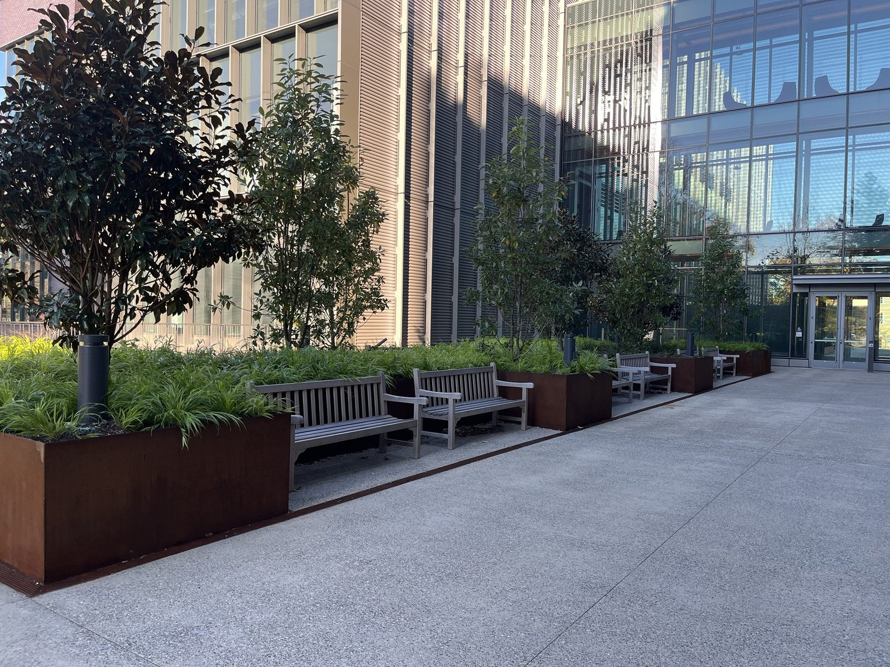
Look closely: Sit on one of the benches. Look at where the bench legs meet the ground. The seat rests on hard paving, but the grasses behind your shoulders grow in open soil inside the steel planter. From your seat, count how many different ground surfaces you can see: paving, gravel, mulch, soil, grass. Rain and sunlight do not act the same way on each one.
Optional: more places to sit
If you have time, ten more seating areas surround the building. The numbers on the map match the photos below and show roughly where each was taken. Pin colors show the ground under the seats as it appears in our photos.
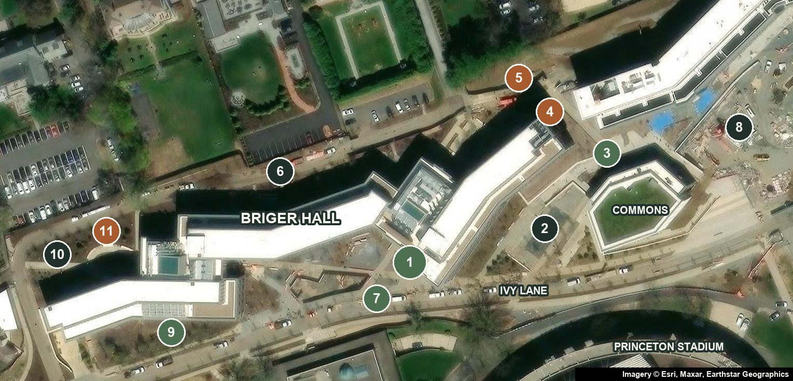
Access note: The surfaces listed here come from our photographs. We have not yet walked every route to check for slopes, steps, or curbs, so do not assume every seating area is step-free. The firm, level path from the main entrance to the starting benches is the most reliable choice.
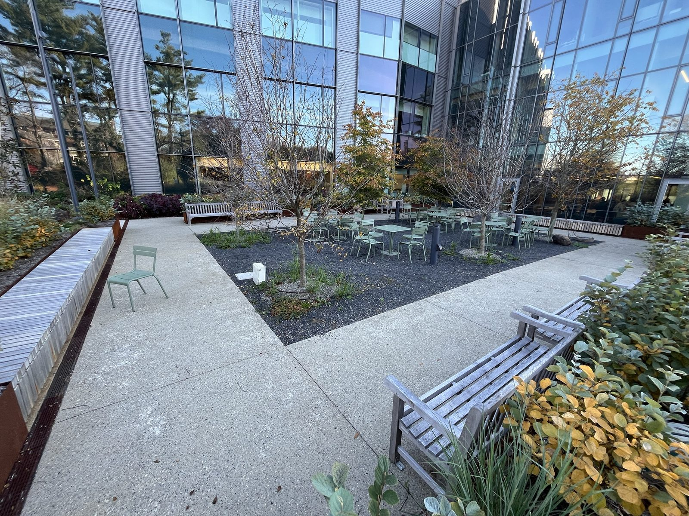
2. Courtyard tables and benchesPaved path, tables on gravel 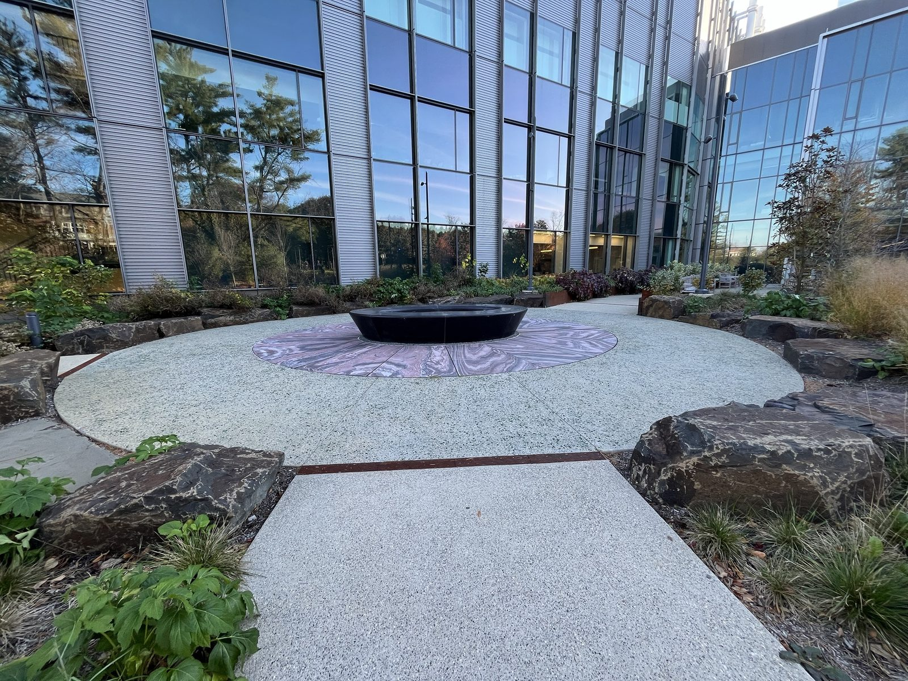
3. Stone circle ringed by bouldersFirm paving 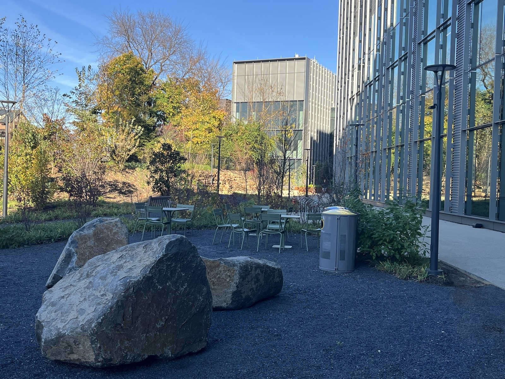
4. Boulders and café chairsLoose gravel 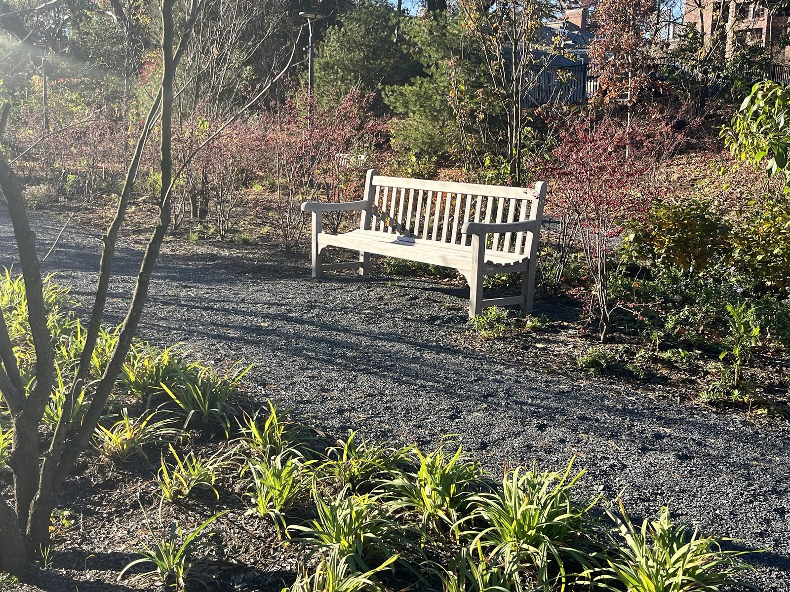
5. Woodland bench on a gravel pathLoose gravel 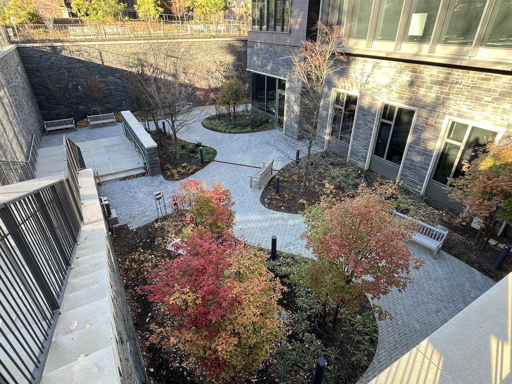
6. Sunken courtyardPaved; stairs visible, step-free route not confirmed 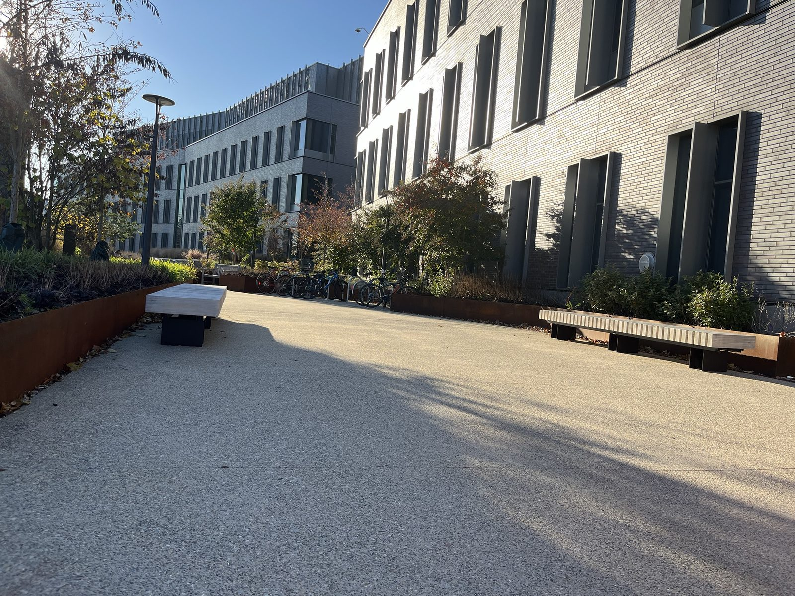
7. Slab benches on the walkwayFirm paving 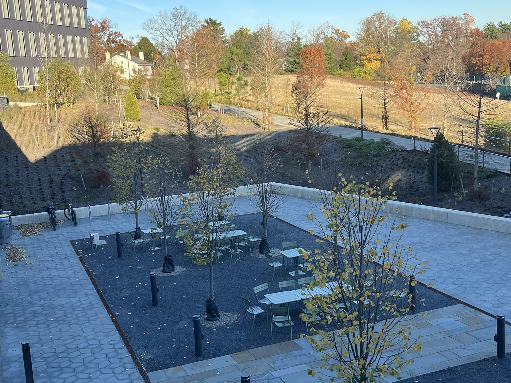
8. Lower terrace by the meadowPaved terrace, tables on gravel 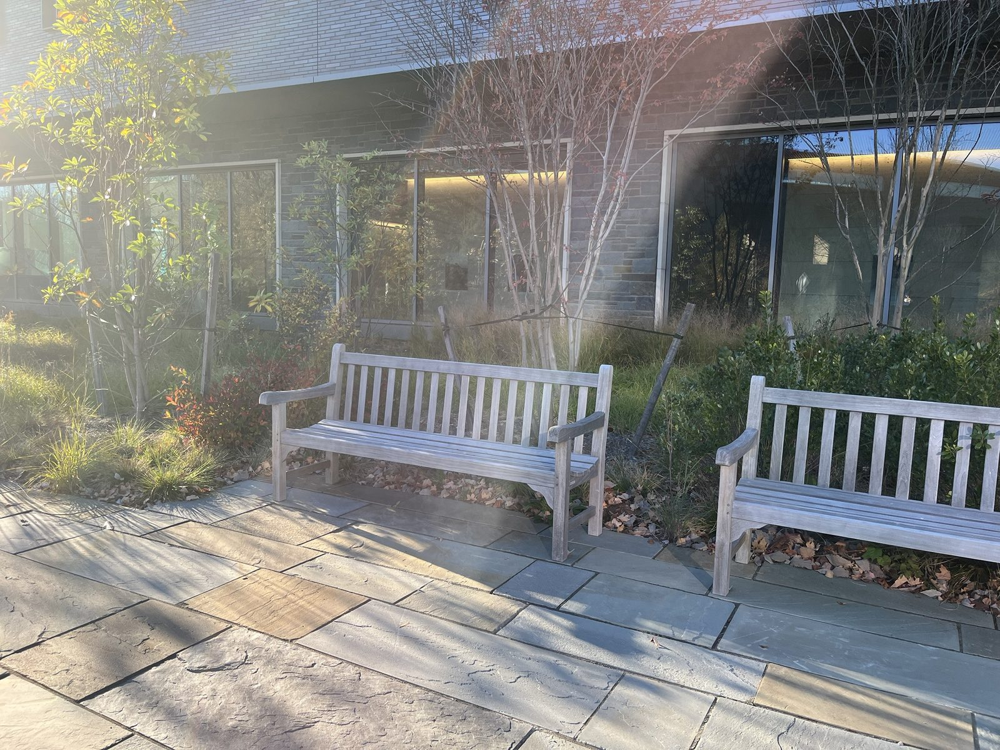
9. Benches along the stone baseFirm paving 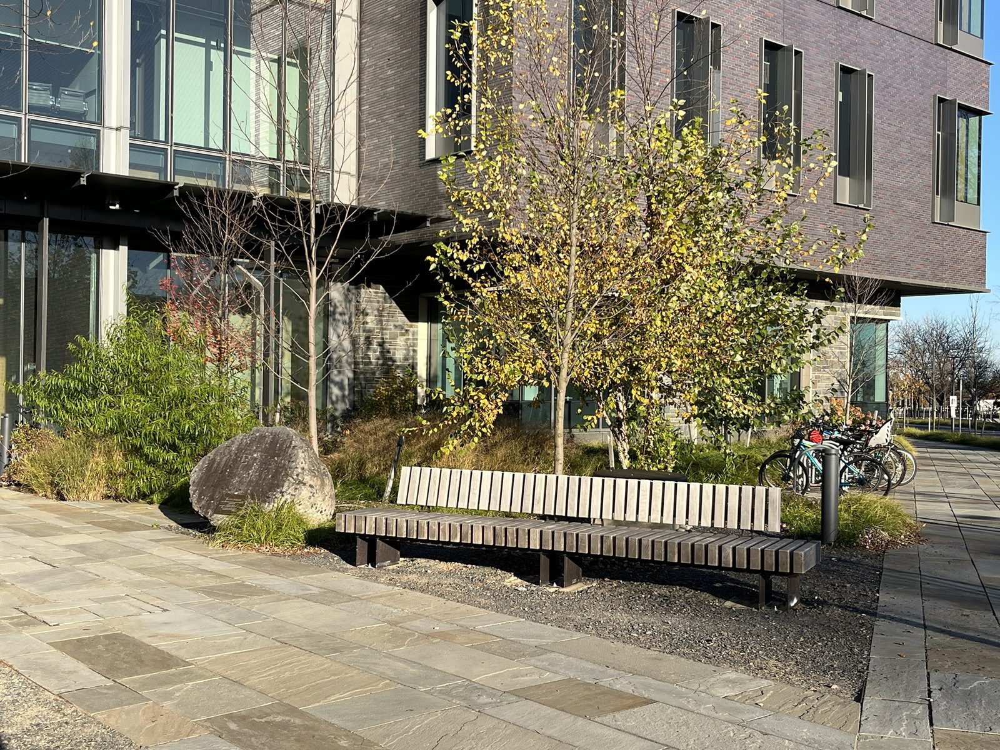
10. Long bench by the boulderPaved path, bench on gravel 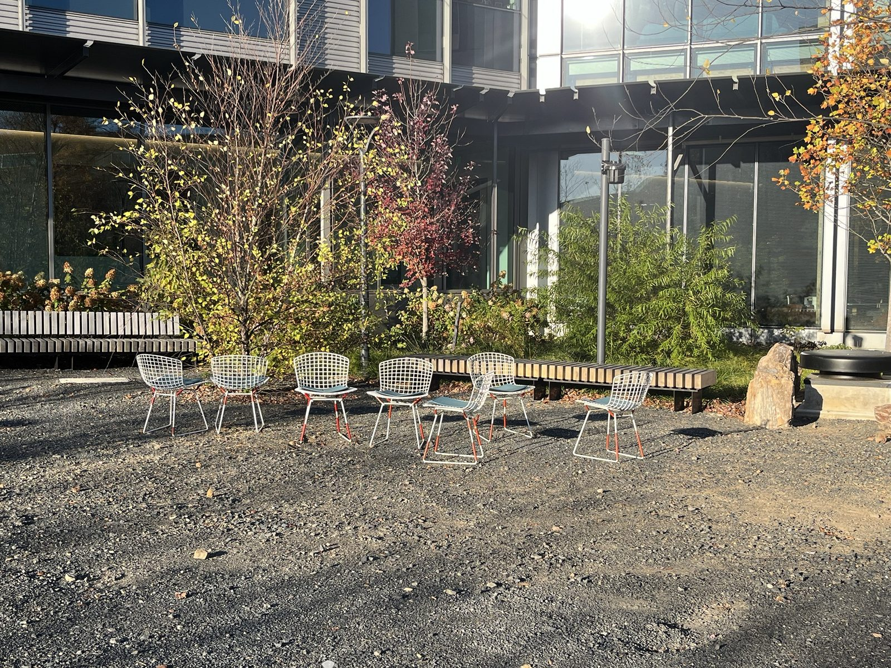
11. Wire chairs on gravelLoose gravel
Why is it interesting?
Our observation: During our visit on November 10, the weather was sunny and relatively warm for a New Jersey fall. We noticed several students using the outdoor seating to talk with friends, work on their laptops, and eat lunch. This made us consider how an outdoor space can encourage people to pause and take a breather rather than simply pass through.
Seating makes spending time outdoors easier to incorporate into daily life. Students can study, socialize, and eat while spending time around greenery. Although this landscape is deliberately designed, it still offers opportunities to notice plants, changing leaves, and seasonal weather. In this sense, the space can serve Briger Hall somewhat as Central Park serves New York City: a place within a built environment where people can gather and experience nature, though at a much smaller scale.
This raises an environmental question about how we design the spaces surrounding buildings. Seating can help turn greenery into a place people actively experience rather than scenery they pass. However, creating a comfortable gathering space also involves choices about paving, vegetation, shade, and maintenance. These choices influence both people’s experience of nature and how much room remains for planting, including opportunities to support native species. The space invites us to consider how a campus landscape can accommodate people while making room for other living things.
Research suggests why opportunities to experience nature deserve attention. In a 2015 experiment, participants who took a 90-minute nature walk reported less repetitive negative thinking afterward than participants who took an urban walk. This does not establish that sitting outside Briger produces the same effect, but it offers a reason to consider how campus design can make experiences of nature part of an ordinary day. [1]
What if / What might change?
Hypothetical alternative
Imagine the same number of outdoor seats around Briger Hall in a mostly paved courtyard with little surrounding vegetation. Students could still study, eat lunch, and gather with friends, but they would have fewer opportunities to spend time among plants or notice seasonal changes. This alternative asks whether providing somewhere to sit is enough to make an inviting outdoor space, or whether the surrounding landscape is an essential part of the experience.
For the environment: Replacing surrounding vegetation with more paving could make the seating area hotter during sunny weather. Trees and plants cool their surroundings by providing shade and through evapotranspiration: water evaporates from the soil and is released through plant leaves, which cools the surrounding air. A courtyard with less vegetation would lose some of that cooling, depending on its materials and other sources of shade. This explains a potential consequence of our hypothetical alternative; we have not measured temperatures at Briger Hall. [2]
For people: A mostly paved courtyard could offer flexible space for larger gatherings, depending on its layout. However, with less vegetation and shade, students could face greater exposure to direct sunlight, making sitting or working outside less comfortable on warm days. [2] Students could still socialize, study, and eat lunch, but would have fewer opportunities to experience greenery and seasonal changes while doing so.
What we do not know: Our observations came from one sunny, relatively warm day, so we do not know how often students use the seating in other weather or seasons. We also have not measured shade or temperatures. If a paved courtyard included shade structures, it might offer similar comfort during warm weather, changing our comparison. Repeated observations and temperature measurements would help us assess these differences.
Show how you know
- Bratman, G. N., Hamilton, J. P., Hahn, K. S., Daily, G. C., & Gross, J. J. (2015). Nature experience reduces rumination and subgenual prefrontal cortex activation. Proceedings of the National Academy of Sciences, 112(28), 8567–8572. Participants who took a 90-minute nature walk reported less repetitive negative thinking afterward than those who took an urban walk. It does not establish the same benefit from sitting outside Briger Hall.
- U.S. Environmental Protection Agency. Benefits of Trees and Vegetation. Updated May 15, 2026. Explains how trees and vegetation cool outdoor spaces through shade and evapotranspiration, supporting our comparison with a courtyard that has less greenery.
Listen and look
Read the complete audio transcript
Take a moment to look at the outdoor seating around Briger Hall. Choose one seat and imagine spending an hour there. Would you read, work on your laptop, eat lunch, or talk with a friend?
Now look beyond the seat. What plants can you see? Is the spot shaded or exposed to the sun? Listen for a moment, too. Which sounds draw your attention?
During our visit on November tenth, the weather was sunny and relatively warm for a New Jersey fall. We noticed several students using these seats to talk with friends, work on their laptops, and eat lunch. The space was somewhere people stayed, rather than simply passed through.
That observation made us think about how seating can bring contact with nature into an ordinary day. You do not necessarily have to set aside time for a separate walk or visit to a park. When conditions allow, you can bring an everyday activity outside.
In that sense, this space can serve Briger Hall somewhat as Central Park serves New York City, although at a much smaller scale. It offers a place within a built environment where people can gather and spend time around greenery.
Of course, this is a deliberately designed landscape. Decisions about seating, paving, plants, and shade shape how we experience it. They also shape how much room remains for other living things.
Research gives us a reason to consider these everyday encounters with nature. In a 2015 study by Gregory Bratman and colleagues, participants who took a ninety-minute nature walk reported less repetitive negative thinking afterward than participants who took an urban walk.
That finding does not prove that sitting outside Briger Hall has the same effect. Walking through a natural setting for ninety minutes is different from eating lunch beside a building. Still, the study suggests why opportunities to experience nature deserve attention.
Now imagine a hypothetical alternative. Keep the same number of seats, but place them in a mostly paved courtyard with little surrounding vegetation.
Students could still study, eat, and meet friends. Depending on its layout, the courtyard might provide flexible space for larger gatherings. But what might be lost?
According to the Environmental Protection Agency, trees and vegetation cool their surroundings through shade and evapotranspiration. That means water evaporates from soil and is released through plant leaves, helping cool the surrounding air.
With less vegetation, the courtyard could lose some of that cooling, which makes it so nice to sit outside. Greater exposure to direct sunlight could also make sitting or working outside less comfortable on warm days. People would still have somewhere to sit, but fewer opportunities to spend time among plants or notice seasonal changes.
There are uncertainties in this comparison. Our visit captured just one sunny, relatively warm day. We do not know how often students use these seats in colder, wetter, or hotter weather. We have not measured temperatures or shade. A paved courtyard with shade structures might offer similar comfort in some conditions.
Look again at the seat you chose. Think about what would make you want to stay: the seating itself, the surrounding greenery, shade, quiet, or something else.
Consider: What is one change that would make you more likely to spend time here?